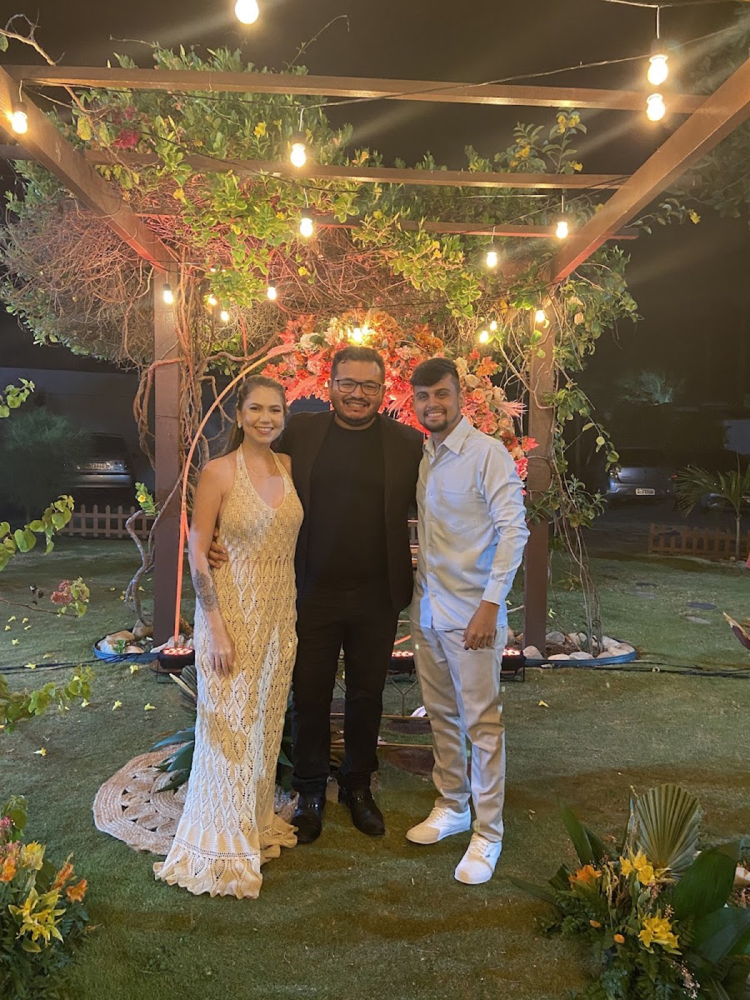
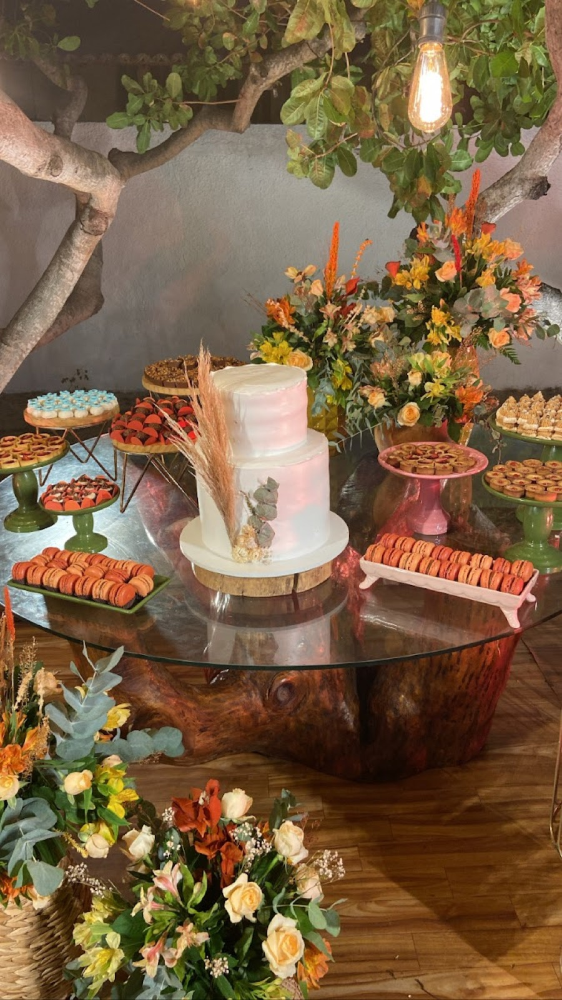
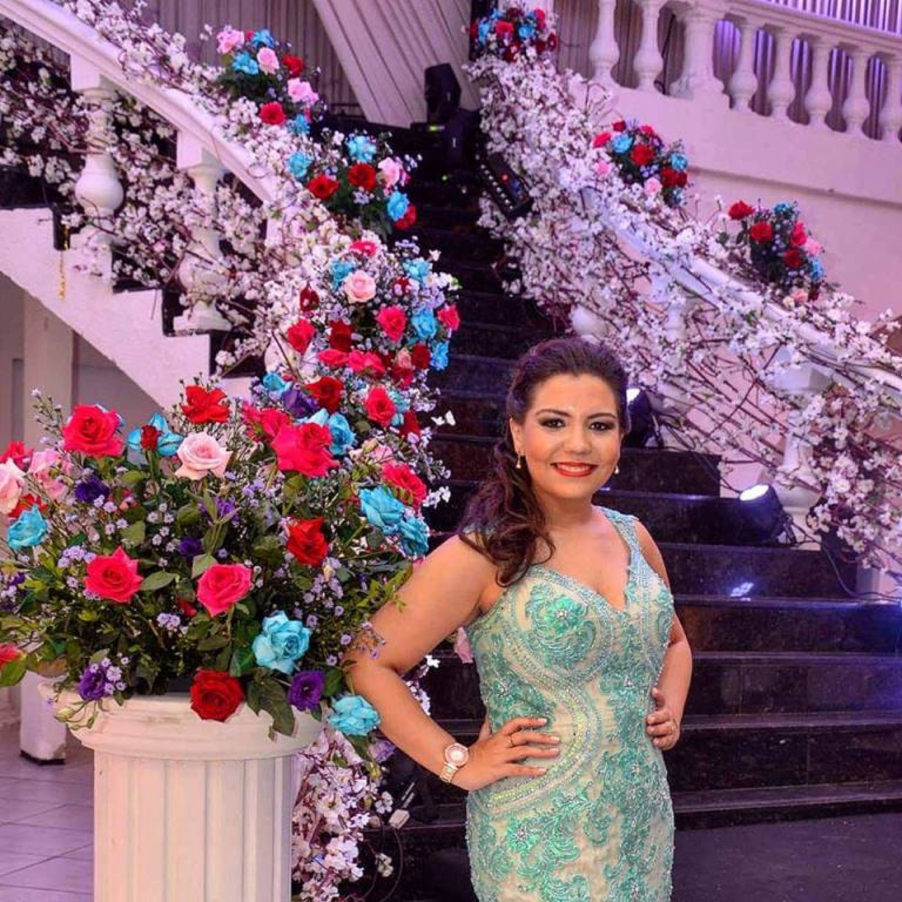
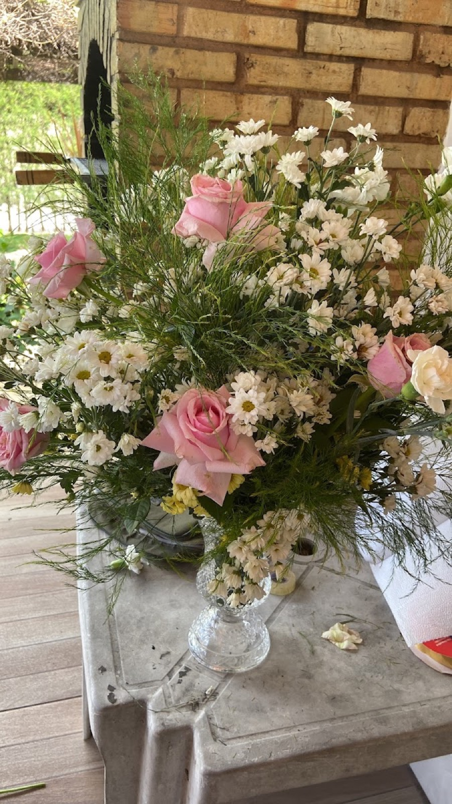
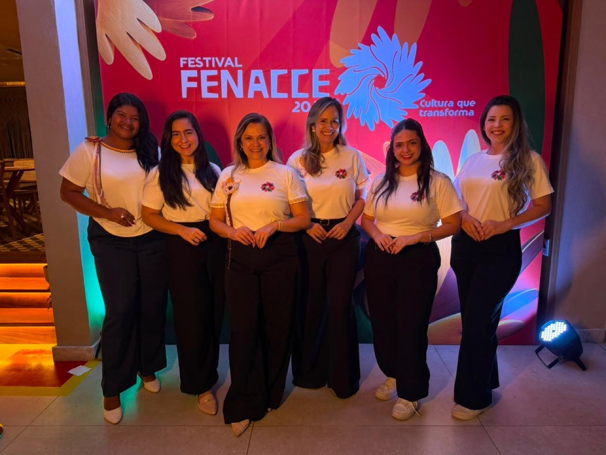
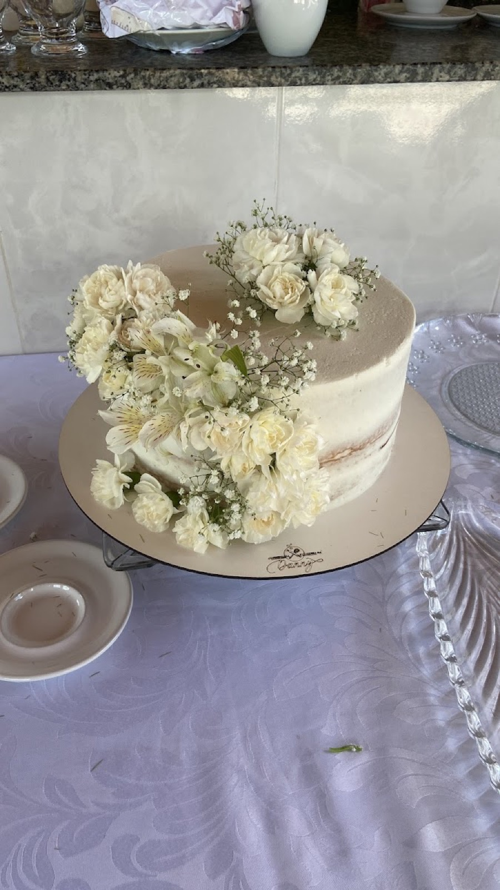
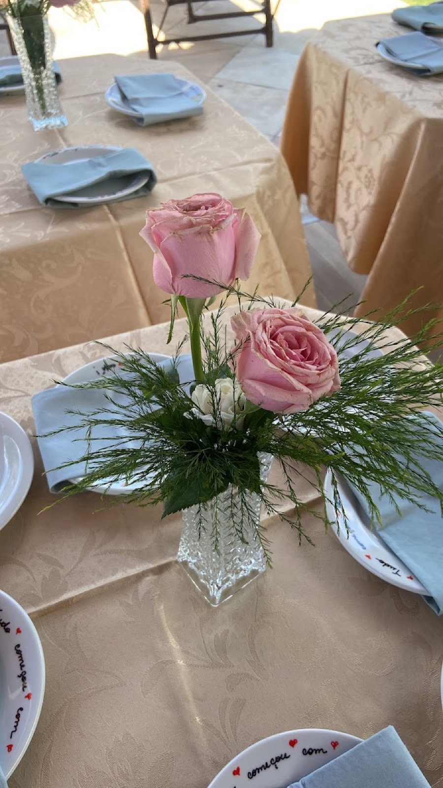

Festa boa é festa bem conduzida.
A WL cuida do roteiro, dos horários e de cada fornecedor para o seu evento fluir do começo ao fim, e você aproveitar cada momento com quem ama.



Você pensa na festa. A gente cuida do caminho.
Cerimonial e organização para que cada etapa aconteça na hora certa, sem você precisar ficar resolvendo nada no dia.
Planejamento
Uma conversa para entender o seu evento, montar o roteiro e organizar os horários com os fornecedores.
Cerimonial no dia
Equipe presente conduzindo cada momento: entrada, cerimônia, recepção, bolo e encerramento.
Recepção dos convidados
Atenção aos convidados e à família, para todo mundo se sentir bem recebido do início ao fim.
Bastidores e detalhes
Alguns registros de eventos com a WL Cerimoniais.




Monte o rascunho do seu evento
Responda 5 perguntas rápidas e receba um resumo com o cronograma sugerido. A mensagem já vai organizada para o WhatsApp da WL.
Vamos conversar sobre a sua data?
O atendimento no escritório é com agendamento. Chame no WhatsApp e combine o melhor horário.